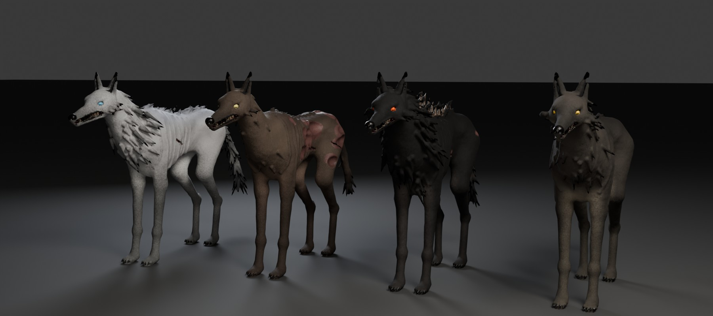
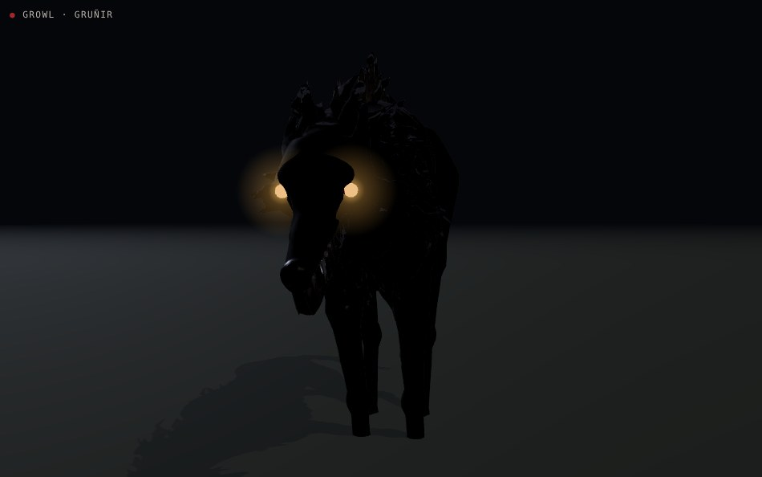
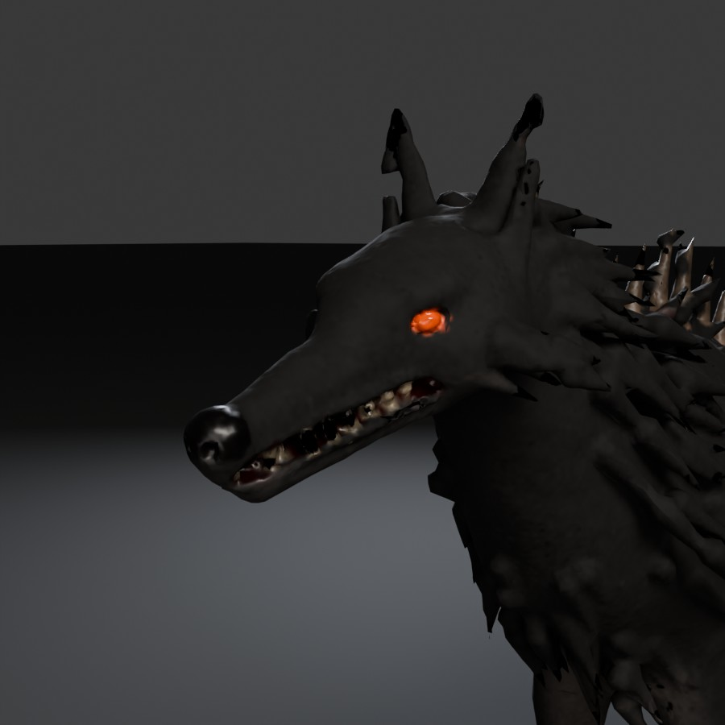
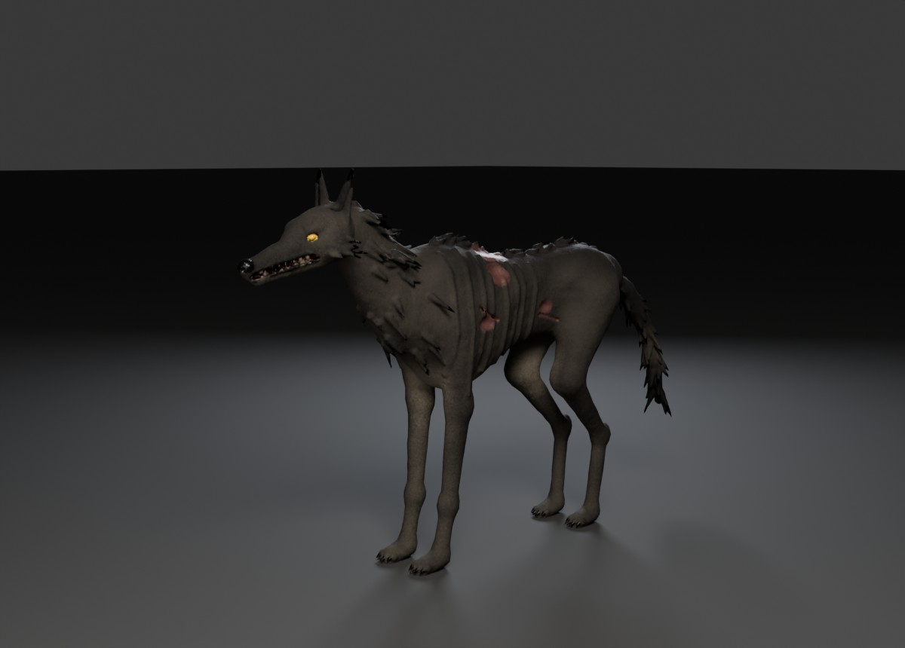

Es el archivo exportado para Roblox: cuatro mallas (una por tipo, 19,5 mil triángulos cada una) sobre el mismo esqueleto de 30 huesos. Las animaciones son los mismos datos que usa el script de Studio.

DamageWolf o bajando su atributo Health.SafeLight y no muerden a quien está dentro: rodean el borde de la luz. Si la luz los alcanza, huyen. Es el gancho para la hoguera.Import 3D → model/HollowWolf.fbx → Rig Type: Custom, sin combinar las mallas.sounds/*.ogg y las texturas y pega sus ids en SOUND_IDS y MAPS del instalador.roblox/InstallWolves.lua en la Command Bar.WolfSpawn (por dónde salen) y SafeLight con un atributo Radius (zonas seguras).NIGHT_ONLY = false para probar de día.DamageWolf.